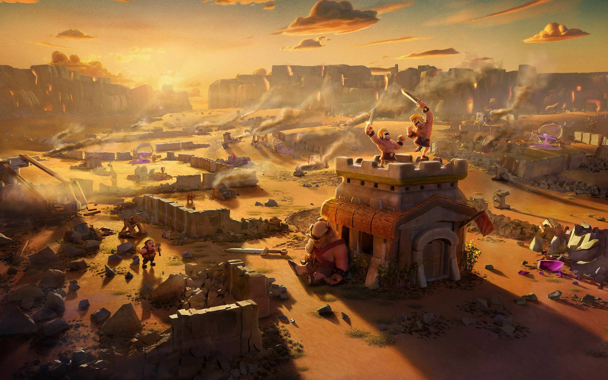
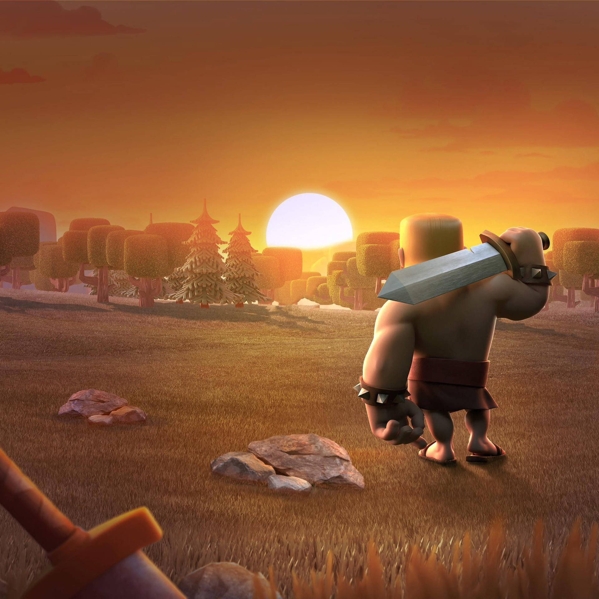
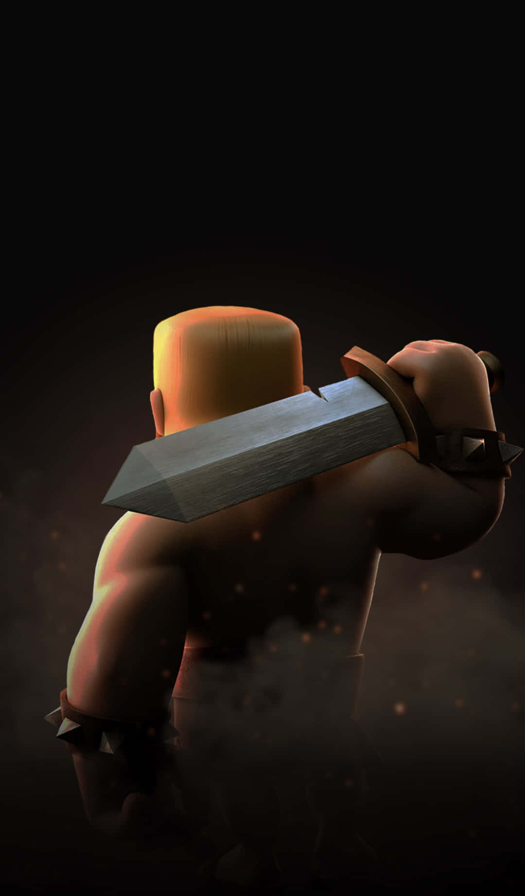

Why Clash Of Clans is a Cult Game.
Any veteran of our beloved clash of clans will know that the old days of clash of clans, OK I will use COC cause it’s easier, back to where I stopped, ahh the old days of coc when dark elixir was more important than town hall and upgrading your heroes was an infinite quest cause of the length in time to wait, OK, not all of us but for the veterans like me that where broke (we need to have a meeting after this) it was like having…., it was like being defenseless. Hi, my name is Moses, and lets break down why Clash Of Clans is a Cult Game.
1. The Bully Culture was terrorizing:
what I mean is that teenage me playing coc,was always broke so guys like us would try to level up, upgrade our resource production units,and when you got your first dark elixir drill and started getting those precious dark elixir, BOOM!! a player with level 12 barbarian king, 5 to 10 hog riders, a level 3 archer queen, giants with golden knuckles, barbarians with bluish helmet on,archers with hoods….. and the list goes on and on ….. takes all the dark elixir you tried to store, I mean thats being a bully, it’s just like when America is attacking a small unorganized nation just to get their large oil deposit, typical way of the world.
OK lets just say it took me time but I discovered that the big boys where fighting other bigger boys and those where fighting other big bigger boys and these ones where fighting the Men of COC(big boys of the big leagues) and those where fighting the titans, which where the absolute godlike clans of clash of clans; there where no legends at that time so being a titan was a big thing,Generally I hope you understand me here COC was the army and you got to follow the rules.
2. Only Strategist Rank Down:
what I mean by this is that those days when you where happy you entered bronze league I, with town hall 6 and you where going through the bronze league I charts and viewing other players clan when you discover a town hall 9 or 10 clan with crystal walls,Xbows (like who on earth brought an xbow to the bronze league, we all babies here, men), inferno tower!!!! Holy Builder have mercy on our souls….. barbarian king level 6 or 8, archer Queen level 4 or 5, Pekka’s!!! in the army camps…. And all the horror’s of the bigger leagues… it’s a stressfull life we lived bro.
But as I ranked up I discovered it was essential to rank down every now and then to farm the lower leagues and discover free loot(unfortunate soul was rearranging his clan), max out resource production units that where full(heavenly), and you know the rest; just to build and max out our defenses so we can rank back up and take our mates by surprise; but down the line as you ranked higher and upgrade your town hall you soon discover that ranking up in the big leagues is hell week, only veterans can understand what I am saying here.
But it was a strategy, die proud or rank low to fight another day, and I chose the later,ok I was broke and needed quick loot to build my clan up so yeah.
3. Never start a clan until atleast TH 10
ok,let me clear this straight, you can start a clan of 50 members which ever town hall you want ok, if you had friends then starting early would be a bonus and I would fully advise you to start early with friends, but if you where a solo, broke, hardened, frustrated veteran, like me starting as a big boy is better, cause you get respect from smaller clan members ranking up, you are a mentor, father, defender of the weak, you know all the responsibility but above all when reinforcement calls you are the first they look at, I can still remember donating most if not all the troops I had in my army camp, like the little guys will be requesting the giants with gold knuckles, barbarians with black and gold helmet, archers with hoodies and let me not get started with those dragon, baby dragon or pekka’s all for them to just waste it on 10000 elixir, and still lose the battle, like what the!!!! bro planning is key here, your troops are the detraction and the reinforcements are there to finish it up.
But thats how it was so be sure to rank up before you start a family men, you will thank me for that.
4. Dark Elixir the Oil of COC :
Now it will come to no surprise that dark elixir was the oil of COC, let me break this down almost all normal elixir troops are essentially weak, with exceptions like the godlike pekka that should have been made a hero instead of the barbarian king(no offense to BK lovers),but just saying Dark elixir troops where the trends of those days.
Let me explain this: - have wall max out even pekka would have to hit twice (over exaggerating here) Hog riders are here to knock off the defense. like they will just be jumping the walls like they are auditioning for ballet, and they get hyped up when clearing defenses. - Spaced your buildings so the enemy has to walk before striking(pekkas walking speed is slow men) boom!! may I present to you the shining all new vikery, have you ever seen a female unit with high damage, good speed, a tolerable health and a freaking area damage that makes distance obsolete, yeah that’s vikery. - when the enemies don’t have hog riders or vikeries and you are sipping your wine and smiling to see his troops frustrated at your defenses 12-14 bowlers to the party, God have Mercy!!! COC is a rigged game Bro double damage is understandable bro,but bouncing damage that hits the buildings behind no thats cheating and if not careful his reinforcements are more bowlers MAXED OUT!!! from is clan mate thats TH 12 and in Titans leagues, I hate it, like its the equivalent of getting bounced by a bouncer at a party into a trash bin, double embarrassment.
There are more but we will stop here.
5. Waiting was a virtue
Now let’s get this clear; COC those days was just a play for 10 minutes wait for 1 hour game, then if you had upgraded troops turn that to 2-3 hours cause it was Supercell great idea to Nerf players with long count down timers; like imagine this, production units max out and filled, storage buildings are max out and full, builders are busy on a project that will take 8 hours including all your barracks except one and now it takes you longer to build an army cause the more barracks you have the shorter the load period, but due to you getting distracted with farming other clans you forgot to spend your coins on upgrading the walls before doing the important upgrades and now cancelling a buildings upgrade is a problem and worst of all your shield is at 10 mins; you see what I just explained here that is how clash of clans gets you in a messed up situation, we where all victims and benefactors of this situation, God bless clash of clans and long live Supercell.
6. COC became a part of life and a community
Brothers and Sisters of the COC Cult it is important to identify that due to the nature of this game we all had to find a brethren to rely on or a group to help each other whether it was at 1:00 am, in the bathroom, in the lecture hall, at family dinners, in detention, maybe even in prison; we all answered the call to Clash of our honor and Clans and as such this game deserves a place in our hearts and in our chats like I will still be hppy if 10 to 20 years from now in our early 40’s or late 30’s some may be older we can still find a place to sit down like matured adults, and argue like teens and youths how wonderful the good old days where.
7. Global, Continental, National, Religious and ethnic Wars where carried out on this Game.
Last but not the least, If there is one thing about COC is that players could express their personal,cultural,National,Racial, and Continental differences in the form or war,heck even movie fans and super hero groups would clash ironman is better than thor, its a clan war, a particular star wars movie was better than the other, thats a clan war there fellas, and lets not forget the indo-pak wars,indo-china wars, indo-japanese wars, indo-Nepal wars, indo-Nigerian wars, indo-American wars ,….. you get it,any game the indians are playing; theres got to be a national rally for a war, the indians are loyal and brutal with their national Identity and will go to war with any national group to just say ‘india is the best’, men even the Indo-Global war was a thing.
I really love my Indian brothers, and admire their loyalty to their state, plus I still argue that Pakistan, China and Nepal are the only national groups strong enough to rival them.
So there you have it the 7 reasons COC is a cult game, I know I did not list all but hey, we all love our old Clash Of Clans, and you can add your other reasons in the comments below.